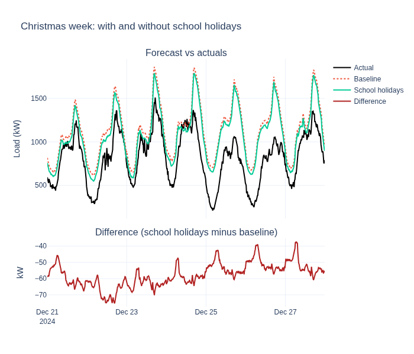

School Holidays and a Christmas Forecast#
Does adding school holidays as a feature change a forecast over the Christmas break? This tutorial trains two GBLinear models on the same data. One uses school holiday features and one does not. Both forecast the week of 21 December 2024, which falls in the Christmas school holiday for the Noord-Holland region.
What you’ll learn:
Export school holidays once to CSV with
SchoolHolidayFeatureAdder.export_csvEnable school holiday features with
SchoolHolidayConfigon a workflowCompare two forecasts side by side and measure whether the feature changes them
Note
This is a single feeder over a short training window, so the result is one data point and not a general conclusion. The training window contains one school holiday period (autumn, 26 October to 3 November 2024).
Data attribution: School holiday data from the OpenHolidays API, licensed under ODbL 1.0. Commercial use is permitted with attribution.
Load the dataset and define the windows#
We use the Liander 2024 dataset, the same as the Forecasting Quickstart, but a different feeder. Feeders serve different customers, so a school holiday affects them differently. We picked Watergraafsmeer because its load dips most during the autumn holiday in the training window (about 16%, versus about 6% to 11% for most feeders). It is in Amsterdam, which is in the Noord-Holland school holiday region we configure below.
Training: 15 September to 21 December 2024. It includes the autumn school holiday (26 October to 3 November).
Forecast: 21 to 28 December 2024, inside the Christmas school holiday.
The predict window includes 14 days of history before the forecast start for lag features.
from datetime import datetime, timedelta
import pandas as pd
from openstef_core.testing import load_liander_dataset
dataset = load_liander_dataset(target="mv_feeder/OS Watergraafsmeer")
train_start = datetime.fromisoformat("2024-09-15T00:00:00Z")
forecast_start = datetime.fromisoformat("2024-12-21T00:00:00Z")
forecast_end = forecast_start + timedelta(days=7)
train_dataset = dataset.filter_by_range(start=train_start, end=forecast_start)
predict_dataset = dataset.filter_by_range(
start=forecast_start - timedelta(days=14),
end=forecast_end,
)
print(
f"Training: {train_dataset.data.shape[0]:,} rows, "
f"{train_dataset.data.index.min():%Y-%m-%d} to {train_dataset.data.index.max():%Y-%m-%d}"
)
print(
f"Predict: {predict_dataset.data.shape[0]:,} rows, "
f"{predict_dataset.data.index.min():%Y-%m-%d} to {predict_dataset.data.index.max():%Y-%m-%d}"
)
Training: 9,312 rows, 2024-09-15 to 2024-12-20
Predict: 2,016 rows, 2024-12-07 to 2024-12-27
Export the school holidays once#
The OpenHolidays API is free and public, so we ask it for one range of dates in one
request and save the result to CSV. Workflows then read that file during fit, so
neither training nor forecasting calls the API again. The file is cached in the
system temp directory and is only requested if it is missing.
The range covers the training window and the forecast window, with a margin on each side.
import tempfile
from datetime import date
from pathlib import Path
from openstef_models.transforms.time_domain import SchoolHolidayConfig, SchoolHolidayFeatureAdder
csv_path = Path(tempfile.gettempdir()) / "openstef_school_holidays_nl_nh_2024_2025.csv"
if not csv_path.exists():
SchoolHolidayFeatureAdder(country_code="NL", subdivision_code="NL-NH").export_csv(
csv_path, start=date(2024, 1, 1), end=date(2025, 12, 31)
)
holidays = SchoolHolidayFeatureAdder.from_csv(csv_path, country_code="NL", subdivision_code="NL-NH")
for period in holidays.holidays:
if period.end_date >= date(2024, 9, 1) and period.start_date <= date(2025, 1, 10):
print(f"{period.name}: {period.start_date} to {period.end_date}")
Summer Holidays: 2024-07-20 to 2024-09-01
Autumn Holidays: 2024-10-26 to 2024-11-03
Christmas Holidays: 2024-12-21 to 2025-01-05
Configure the two workflows#
Both workflows use the same GBLinear configuration. The only difference is
school_holidays. The baseline leaves it unset, and the holiday model sets it to a
SchoolHolidayConfig
that reads the CSV above.
from openstef_core.types import LeadTime, Q
from openstef_models.presets import ForecastingWorkflowConfig, create_forecasting_workflow
from openstef_models.presets.forecasting_workflow import GBLinearForecaster
from openstef_models.workflows import CustomForecastingWorkflow
def build_workflow(
model_id: str, school_holidays: SchoolHolidayConfig | None, random_state: int = 0
) -> CustomForecastingWorkflow:
# coord_descent is deterministic for a given seed. The default shotgun updater is not.
return create_forecasting_workflow(
config=ForecastingWorkflowConfig(
model_id=model_id,
model="gblinear",
horizons=[LeadTime.from_string("PT36H")],
quantiles=[Q(0.5), Q(0.1), Q(0.9)],
target_column="load",
temperature_column="temperature_2m",
relative_humidity_column="relative_humidity_2m",
wind_speed_column="wind_speed_10m",
radiation_column="shortwave_radiation",
pressure_column="surface_pressure",
school_holidays=school_holidays,
verbosity=0,
mlflow_storage=None,
gblinear_hyperparams=GBLinearForecaster.HyperParams(
n_steps=50, updater="coord_descent", random_state=random_state
),
)
)
holiday_config = SchoolHolidayConfig(country_code="NL", subdivision_code="NL-NH", csv_path=csv_path)
baseline_workflow = build_workflow("christmas_gblinear_baseline", school_holidays=None)
holiday_workflow = build_workflow("christmas_gblinear_school_holidays", school_holidays=holiday_config)
Train both models#
Both models are fit on the same training data. The holiday model reads the CSV during
fit, so the holiday feature set is fixed in the checkpoint.
baseline_result = baseline_workflow.fit(train_dataset)
holiday_result = holiday_workflow.fit(train_dataset)
for name, result in [("Baseline", baseline_result), ("School holidays", holiday_result)]:
if result is not None and result.metrics_test is not None:
print(f"{name} test-set metrics:")
print(result.metrics_test.to_dataframe())
[2026-11-13 15:55:52,666][INFO] lag fallback applied
[2026-11-13 15:55:52,831][INFO] lag fallback applied
[2026-11-13 15:55:53,925][INFO] lag fallback applied
[2026-11-13 15:55:54,182][INFO] lag fallback applied
[2026-11-13 15:55:54,314][INFO] lag fallback applied
[2026-11-13 15:55:55,430][INFO] lag fallback applied
Forecast the Christmas week#
Each model forecasts the same seven days, starting on the first day of the Christmas break.
from openstef_core.datasets import ForecastDataset
baseline_forecast: ForecastDataset = baseline_workflow.predict(predict_dataset, forecast_start=forecast_start)
holiday_forecast: ForecastDataset = holiday_workflow.predict(predict_dataset, forecast_start=forecast_start)
print(f"Baseline rows: {len(baseline_forecast.data)}, school holiday rows: {len(holiday_forecast.data)}")
Baseline rows: 672, school holiday rows: 672
Compare the two forecasts#
We score both forecasts against the measured load with two metrics from openstef-beam:
rMAE scores the median forecast. It is the mean absolute error divided by the range of the measured load in the window.
rCRPS scores all quantiles together. It is the continuous ranked probability score divided by the same range.
Both are scale-free, and lower is better. Both models share the same measured load, so the normalizer is identical and the two scores compare directly. The difference between the two forecasts shows how much the holiday feature moves the prediction.
from openstef_beam.metrics import rcrps, rmae
actual = predict_dataset.data["load"].loc[forecast_start:forecast_end].rename("actual")
baseline_median = baseline_forecast.median_series.rename("baseline")
holiday_median = holiday_forecast.median_series.rename("school_holidays")
# The Liander feeder stores load in watts, so convert to kilowatts for display.
comparison = pd.concat([actual, baseline_median, holiday_median], axis=1).dropna() / 1000
comparison["difference"] = comparison["school_holidays"] - comparison["baseline"]
def score(forecast: ForecastDataset, actual: pd.Series) -> dict[str, float]:
quantiles = sorted(forecast.quantiles)
columns = [quantile.format() for quantile in quantiles]
aligned = pd.concat([actual, forecast.data[columns]], axis=1).dropna()
return {
"rMAE": rmae(aligned["actual"].to_numpy(), aligned[Q(0.5).format()].to_numpy()),
"rCRPS": rcrps(aligned["actual"].to_numpy(), aligned[columns].to_numpy(), quantiles),
}
summary = pd.DataFrame(
{
"Baseline": score(baseline_forecast, actual),
"School holidays": score(holiday_forecast, actual),
}
).T
print(f"Compared rows: {len(comparison)}")
print(summary.round(4).to_string())
print(f"\nMean difference, school holidays minus baseline: {comparison['difference'].mean():.3f} kW")
print(f"Mean absolute difference between the two forecasts: {comparison['difference'].abs().mean():.3f} kW")
print(f"Largest absolute difference: {comparison['difference'].abs().max():.3f} kW")
Compared rows: 672
rMAE rCRPS
Baseline 0.3301 0.2404
School holidays 0.2729 0.2042
Mean difference, school holidays minus baseline: -57.628 kW
Mean absolute difference between the two forecasts: 57.628 kW
Largest absolute difference: 75.224 kW
Visualize the comparison#
The top panel shows the measured load and both median forecasts. The bottom panel shows the difference, school holidays minus baseline.

Is the difference more than noise?#
A single fit can differ from another only because of its random seed. We refit both variants for five seeds, using the same seed for the baseline and the holiday model so each pair differs only in the school-holiday features. The spread of the paired difference across seeds shows how much of the gain is run variance.
import numpy as np
fit_rows = []
for seed in range(5):
row: dict[str, float] = {"seed": seed}
for label, school_holidays in [("baseline", None), ("school_holidays", holiday_config)]:
workflow = build_workflow(f"christmas_gblinear_{label}_seed{seed}", school_holidays, random_state=seed)
workflow.fit(train_dataset)
for metric, value in score(workflow.predict(predict_dataset, forecast_start=forecast_start), actual).items():
row[f"{label}_{metric}"] = value
fit_rows.append(row)
fit_results = pd.DataFrame(fit_rows)
for metric in ["rMAE", "rCRPS"]:
fit_results[f"{metric}_difference"] = fit_results[f"school_holidays_{metric}"] - fit_results[f"baseline_{metric}"]
print(fit_results.round(4).to_string(index=False))
print()
for metric in ["rMAE", "rCRPS"]:
difference = fit_results[f"{metric}_difference"]
print(
f"{metric} difference (school holidays minus baseline): "
f"mean {difference.mean():.4f}, std {difference.std():.4f}"
)
[2026-11-13 15:55:57,311][INFO] lag fallback applied
[2026-11-13 15:55:57,441][INFO] lag fallback applied
[2026-11-13 15:55:58,638][INFO] lag fallback applied
[2026-11-13 15:55:58,969][INFO] lag fallback applied
[2026-11-13 15:55:59,104][INFO] lag fallback applied
[2026-11-13 15:56:00,218][INFO] lag fallback applied
[2026-11-13 15:56:00,596][INFO] lag fallback applied
[2026-11-13 15:56:00,727][INFO] lag fallback applied
[2026-11-13 15:56:01,818][INFO] lag fallback applied
[2026-11-13 15:56:02,157][INFO] lag fallback applied
[2026-11-13 15:56:02,290][INFO] lag fallback applied
[2026-11-13 15:56:03,424][INFO] lag fallback applied
[2026-11-13 15:56:03,755][INFO] lag fallback applied
[2026-11-13 15:56:03,887][INFO] lag fallback applied
[2026-11-13 15:56:04,907][INFO] lag fallback applied
[2026-11-13 15:56:05,269][INFO] lag fallback applied
[2026-11-13 15:56:05,404][INFO] lag fallback applied
[2026-11-13 15:56:06,622][INFO] lag fallback applied
[2026-11-13 15:56:06,962][INFO] lag fallback applied
[2026-11-13 15:56:07,098][INFO] lag fallback applied
[2026-11-13 15:56:08,193][INFO] lag fallback applied
[2026-11-13 15:56:08,678][INFO] lag fallback applied
[2026-11-13 15:56:08,808][INFO] lag fallback applied
[2026-11-13 15:56:09,922][INFO] lag fallback applied
[2026-11-13 15:56:10,250][INFO] lag fallback applied
[2026-11-13 15:56:10,379][INFO] lag fallback applied
[2026-11-13 15:56:11,333][INFO] lag fallback applied
[2026-11-13 15:56:11,681][INFO] lag fallback applied
[2026-11-13 15:56:11,812][INFO] lag fallback applied
[2026-11-13 15:56:13,068][INFO] lag fallback applied
seed baseline_rMAE baseline_rCRPS school_holidays_rMAE school_holidays_rCRPS rMAE_difference rCRPS_difference
0 0.3301 0.2404 0.2729 0.2042 -0.0571 -0.0362
1 0.3277 0.2387 0.2730 0.2044 -0.0547 -0.0343
2 0.3351 0.2440 0.2728 0.2044 -0.0623 -0.0395
3 0.3326 0.2419 0.2722 0.2041 -0.0604 -0.0378
4 0.3300 0.2404 0.2720 0.2043 -0.0580 -0.0361
rMAE difference (school holidays minus baseline): mean -0.0585, std 0.0029
rCRPS difference (school holidays minus baseline): mean -0.0368, std 0.0020
Placebo: a normal school week#
If the gain above comes from the holiday, it should not appear in a week with no holiday. We retrain both models on data up to 9 December 2024 and forecast 9 to 16 December, a normal school week. Training still includes the autumn holiday, but not the Christmas one. We run the same five paired seeds.
placebo_start = datetime.fromisoformat("2024-12-09T00:00:00Z")
placebo_end = placebo_start + timedelta(days=7)
placebo_train = dataset.filter_by_range(start=train_start, end=placebo_start)
placebo_predict = dataset.filter_by_range(start=placebo_start - timedelta(days=14), end=placebo_end)
placebo_actual = placebo_predict.data["load"].loc[placebo_start:placebo_end].rename("actual")
placebo_rows = []
for seed in range(5):
row: dict[str, float] = {"seed": seed}
for label, school_holidays in [("baseline", None), ("school_holidays", holiday_config)]:
workflow = build_workflow(f"placebo_gblinear_{label}_seed{seed}", school_holidays, random_state=seed)
workflow.fit(placebo_train)
forecast = workflow.predict(placebo_predict, forecast_start=placebo_start)
for metric, value in score(forecast, placebo_actual).items():
row[f"{label}_{metric}"] = value
placebo_rows.append(row)
placebo_results = pd.DataFrame(placebo_rows)
for metric in ["rMAE", "rCRPS"]:
placebo_results[f"{metric}_difference"] = (
placebo_results[f"school_holidays_{metric}"] - placebo_results[f"baseline_{metric}"]
)
print(placebo_results.round(4).to_string(index=False))
print()
for metric in ["rMAE", "rCRPS"]:
difference = placebo_results[f"{metric}_difference"]
print(
f"{metric} difference, normal week (school holidays minus baseline): "
f"mean {difference.mean():.4f}, std {difference.std():.4f}, "
f"school holidays better in {(difference < 0).sum()} of {len(difference)} fits"
)
[2026-11-13 15:56:13,406][INFO] lag fallback applied
[2026-11-13 15:56:13,522][INFO] lag fallback applied
[2026-11-13 15:56:14,561][INFO] lag fallback applied
[2026-11-13 15:56:14,861][INFO] lag fallback applied
[2026-11-13 15:56:14,979][INFO] lag fallback applied
[2026-11-13 15:56:16,081][INFO] lag fallback applied
[2026-11-13 15:56:16,451][INFO] lag fallback applied
[2026-11-13 15:56:16,566][INFO] lag fallback applied
[2026-11-13 15:56:17,569][INFO] lag fallback applied
[2026-11-13 15:56:17,869][INFO] lag fallback applied
[2026-11-13 15:56:17,987][INFO] lag fallback applied
[2026-11-13 15:56:18,957][INFO] lag fallback applied
[2026-11-13 15:56:19,257][INFO] lag fallback applied
[2026-11-13 15:56:19,372][INFO] lag fallback applied
[2026-11-13 15:56:20,266][INFO] lag fallback applied
[2026-11-13 15:56:20,570][INFO] lag fallback applied
[2026-11-13 15:56:20,689][INFO] lag fallback applied
[2026-11-13 15:56:21,704][INFO] lag fallback applied
[2026-11-13 15:56:22,012][INFO] lag fallback applied
[2026-11-13 15:56:22,131][INFO] lag fallback applied
[2026-11-13 15:56:23,027][INFO] lag fallback applied
[2026-11-13 15:56:23,470][INFO] lag fallback applied
[2026-11-13 15:56:23,596][INFO] lag fallback applied
[2026-11-13 15:56:24,603][INFO] lag fallback applied
[2026-11-13 15:56:24,920][INFO] lag fallback applied
[2026-11-13 15:56:25,042][INFO] lag fallback applied
[2026-11-13 15:56:25,900][INFO] lag fallback applied
[2026-11-13 15:56:26,200][INFO] lag fallback applied
[2026-11-13 15:56:26,319][INFO] lag fallback applied
[2026-11-13 15:56:27,422][INFO] lag fallback applied
seed baseline_rMAE baseline_rCRPS school_holidays_rMAE school_holidays_rCRPS rMAE_difference rCRPS_difference
0 0.2666 0.1502 0.2720 0.1530 0.0055 0.0029
1 0.2665 0.1507 0.2705 0.1527 0.0040 0.0020
2 0.2707 0.1524 0.2727 0.1536 0.0020 0.0013
3 0.2680 0.1510 0.2707 0.1524 0.0027 0.0014
4 0.2679 0.1508 0.2715 0.1529 0.0036 0.0022
rMAE difference, normal week (school holidays minus baseline): mean 0.0035, std 0.0013, school holidays better in 0 of 5 fits
rCRPS difference, normal week (school holidays minus baseline): mean 0.0019, std 0.0006, school holidays better in 0 of 5 fits
Regional groups when the region is unknown#
Choosing NL-NH assumes we know the region of the feeder. When that is not known, set
regional_groups=True. The transform then adds one 0/1 column per group of subdivisions that
share a holiday calendar, and the model learns which group matters for this feeder. Columns are
numbered by the sorted subdivision codes of each group, so the numbering is stable across runs. The
file below holds all Dutch subdivisions, from one cached request.
regional_csv_path = Path(tempfile.gettempdir()) / "openstef_school_holidays_nl_regional_2024_2025.csv"
if not regional_csv_path.exists():
SchoolHolidayFeatureAdder(country_code="NL", regional_groups=True).export_csv(
regional_csv_path, start=date(2024, 1, 1), end=date(2025, 12, 31)
)
regional_holidays = SchoolHolidayFeatureAdder.from_csv(regional_csv_path, country_code="NL", regional_groups=True)
group_members = {
period.group_code: period.subdivisions for period in regional_holidays.holidays if period.group_code is not None
}
for code in sorted(group_members, key=int):
print(f"is_school_holiday_{code}: {len(group_members[code])} subdivisions {group_members[code][:6]}")
is_school_holiday_0: 126 subdivisions ['NL-DR', 'NL-DR-AH', 'NL-DR-AS', 'NL-DR-BO', 'NL-DR-CO', 'NL-DR-DW']
is_school_holiday_1: 112 subdivisions ['NL-FL', 'NL-FL-ZE', 'NL-GE', 'NL-GE-AA', 'NL-GE-AP', 'NL-GE-BA']
is_school_holiday_2: 127 subdivisions ['NL-GE', 'NL-GE-AR', 'NL-GE-BD', 'NL-GE-BE', 'NL-GE-DB', 'NL-GE-DR']
We fit one regional model and compare it with the baseline and the NL-NH model on the
Christmas week.
regional_config = SchoolHolidayConfig(country_code="NL", regional_groups=True, csv_path=regional_csv_path)
regional_workflow = build_workflow("christmas_gblinear_regional", school_holidays=regional_config)
regional_workflow.fit(train_dataset)
regional_forecast: ForecastDataset = regional_workflow.predict(predict_dataset, forecast_start=forecast_start)
regional_summary = pd.DataFrame(
{
"Baseline": score(baseline_forecast, actual),
"NL-NH holidays": score(holiday_forecast, actual),
"Regional groups": score(regional_forecast, actual),
}
).T
print(regional_summary.round(4).to_string())
[2026-11-13 15:56:28,834][INFO] lag fallback applied
[2026-11-13 15:56:28,977][INFO] lag fallback applied
[2026-11-13 15:56:30,134][INFO] lag fallback applied
rMAE rCRPS
Baseline 0.3301 0.2404
NL-NH holidays 0.2729 0.2042
Regional groups 0.2710 0.2054
To check that this is not noise, we repeat the regional fit for the same five seeds and compare each fit with the baseline fit that used the same seed in the variance check above.
regional_rows = []
for seed in range(5):
workflow = build_workflow(f"christmas_gblinear_regional_seed{seed}", regional_config, random_state=seed)
workflow.fit(train_dataset)
row: dict[str, float] = {"seed": seed}
for metric, value in score(workflow.predict(predict_dataset, forecast_start=forecast_start), actual).items():
row[f"regional_{metric}"] = value
regional_rows.append(row)
regional_fits = fit_results[["seed", "baseline_rMAE", "baseline_rCRPS"]].merge(pd.DataFrame(regional_rows), on="seed")
for metric in ["rMAE", "rCRPS"]:
regional_fits[f"{metric}_difference"] = regional_fits[f"regional_{metric}"] - regional_fits[f"baseline_{metric}"]
print(regional_fits.round(4).to_string(index=False))
print()
for metric in ["rMAE", "rCRPS"]:
difference = regional_fits[f"{metric}_difference"]
print(
f"{metric} difference (regional groups minus baseline): "
f"mean {difference.mean():.4f}, std {difference.std():.4f}, "
f"regional better in {(difference < 0).sum()} of {len(difference)} fits"
)
[2026-11-13 15:56:30,482][INFO] lag fallback applied
[2026-11-13 15:56:30,616][INFO] lag fallback applied
[2026-11-13 15:56:31,692][INFO] lag fallback applied
[2026-11-13 15:56:32,025][INFO] lag fallback applied
[2026-11-13 15:56:32,160][INFO] lag fallback applied
[2026-11-13 15:56:33,346][INFO] lag fallback applied
[2026-11-13 15:56:33,689][INFO] lag fallback applied
[2026-11-13 15:56:33,830][INFO] lag fallback applied
[2026-11-13 15:56:35,104][INFO] lag fallback applied
[2026-11-13 15:56:35,434][INFO] lag fallback applied
[2026-11-13 15:56:35,570][INFO] lag fallback applied
[2026-11-13 15:56:36,574][INFO] lag fallback applied
[2026-11-13 15:56:36,910][INFO] lag fallback applied
[2026-11-13 15:56:37,042][INFO] lag fallback applied
[2026-11-13 15:56:38,194][INFO] lag fallback applied
seed baseline_rMAE baseline_rCRPS regional_rMAE regional_rCRPS rMAE_difference rCRPS_difference
0 0.3301 0.2404 0.2710 0.2054 -0.0591 -0.0350
1 0.3277 0.2387 0.2747 0.2083 -0.0530 -0.0305
2 0.3351 0.2440 0.2760 0.2090 -0.0591 -0.0349
3 0.3326 0.2419 0.2741 0.2075 -0.0585 -0.0343
4 0.3300 0.2404 0.2717 0.2058 -0.0583 -0.0345
rMAE difference (regional groups minus baseline): mean -0.0576, std 0.0026, regional better in 5 of 5 fits
rCRPS difference (regional groups minus baseline): mean -0.0339, std 0.0019, regional better in 5 of 5 fits
Next steps#
Feature Engineering for Energy Forecasting — the school holiday transform and the one-hot option for each holiday name.
Forecasting Quickstart — the baseline workflow without holidays.